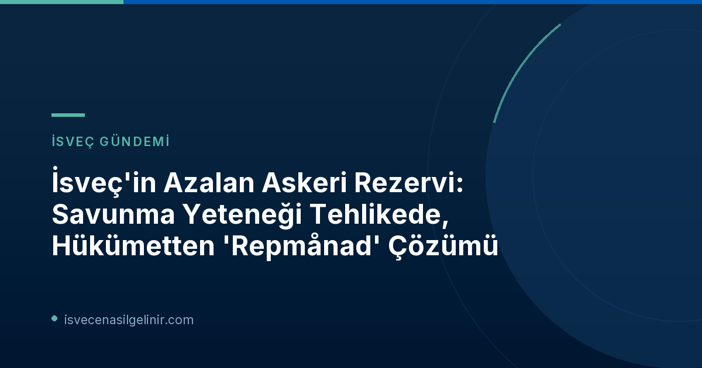

İsveç'in Savunma Yeteneği Neden Tehlikede?
İsveç Silahlı Kuvvetleri (Försvarsmakten), potansiyel savaş ve kayıplarla başa çıkabilmek için eğitimli, zorunlu askerlik yapmış bir kişisel rezerve sahiptir. Bu rezervdeki askerler, ihtiyaç halinde savunma gücünü takviye etmekle görevlidir. Ancak son yıllarda bu kişisel rezervin sayısı sürekli olarak azalmaktadır. Devletin yaptığı bir araştırmaya göre, mevcut rezerv zaten yetersizdir ve hızla büyütülmesi gerekmektedir. Rezervde kaç kişinin bulunduğu gizli tutulsa da, hükümetten gelen bir teklif, sayının istikrarlı bir şekilde azaldığını ve bunun İsveç'in savunma yeteneğini tehlikeye attığını açıkça belirtmektedir.
Bu düşüşün temel nedeni, sürekli yeni askerlerin rezerve katılmasına rağmen, daha fazlasının sistemden düşmesidir. Bir askerin savaş pozisyonu, son hizmetinden sonra on yıl içinde tekrar eğitim almadığı takdirde sona ermektedir. Försvarsmakten, gerekli hızda tekrar eğitimleri yürütecek yeterli personele ve materyale sahip değildir. Hatta son bütçe taslağında, artan zorunlu asker sayısının, tekrar eğitimleri aynı anda yürütmeyi daha da zorlaştırabileceği uyarısı yapılmıştır.
Repetisyon Eğitimi (Repmånad) Nedir ve Neden Önemlidir?
Repetisyon eğitimi, İsveç savunma sisteminin temel taşlarından biridir. Savaş pozisyonunda olan zorunlu askerlerin, bilgilerini tazelemek ve muharebe birimlerinin görevlerini yerine getirme yeteneklerini geliştirmek amacıyla İsveç Silahlı Kuvvetleri tarafından geri çağrılmasıdır. Bu eğitimler, askerlerin becerilerini güncel tutmaları ve olası kriz durumlarında etkin bir şekilde görev yapabilmeleri için hayati öneme sahiptir.
Repetisyon Eğitimi (Repmånad) Temel Kuralları
- Amaç: Askerlerin bilgi ve becerilerini tazelemek, savaş birimlerinin görev kabiliyetini artırmak.
- Krigsplacering (Savaş Pozisyonu): Son hizmetten sonra normalde 10 yıl geçerlidir.
- Uzatma: Her tekrar eğitim, yeni bir 10 yıllık dönem başlatır.
- Yaş Sınırı: En geç 47 yaşına kadar devam eder.
- Erteleme: Repetisyon eğitiminin önemli zorluklara yol açması durumunda erteleme talep edilebilir.
- Kaynak: Plikt- och prövningsverket (İsveç Askerlik ve Seçme Kurumu)
Hükümetin Radikal Çözümü: 10 Yıl Kuralı Kaldırılıyor
İsveç hükümeti, bu krize çözüm olarak 10 yıllık süreyi kaldırmayı önermektedir. Bu değişiklikle birlikte, askerler tekrar eğitim almasalar bile 47 yaşına kadar rezervde kalmaya devam edebileceklerdir. Savunma Bakanı Pål Jonson (M), bu adımı "Daha güçlü bir personel tedariki oluşturuyoruz, on yıl sonra düşmemelisiniz. Bu önemli bir adım." sözleriyle savunmuştur.
Hükümetin önerisine göre, hiçbir asker önceden tekrar eğitim almadan gerçek bir operasyona gönderilmeyecektir. Ancak bu çözüm, sorunu sadece erteleme riski taşımaktadır. İsveç'te yaşam ve iş fırsatlarına dair güncel gelişmeleri takip etmek, İsveç vatandaşlık süreçleri hakkında bilgi sahibi olmak ve İsveç Vatandaşlık Sınavı'na hazırlanmak, ülkeye entegrasyonunuz için kritik öneme sahiptir.
Çözüm Mü, Erteleme Mi? Uzman Görüşleri
Askeri personel tedariki konusunda uzun süredir araştırma yapan Johan Österberg, hükümetin önerisinin sadece sorunu erteleyeceğini belirtiyor. Österberg, "Bu ileriye dönük bir yol gibi duruyor, ancak o zaman yeterli personelin tekrar eğitim verebilmesi gerekiyor. Burada büyük zorluklar var." diyerek, gelecekte de yeterli eğitim kapasitesinin sağlanmasının önemine vurgu yapmaktadır. Försvarsmakten'in kendi bütçe taslağında dahi, zorunlu asker sayısındaki olası artışın, eş zamanlı olarak tekrar eğitimleri yürütmeyi daha da zorlaştırabileceği uyarısı yapılması, uzmanların endişelerini desteklemektedir.
Geleceğe Yönelik Beklentiler ve Zorluklar
İsveç'in azalan askeri rezervi, ülkenin savunma politikalarında köklü değişiklikleri beraberinde getirebilir. Hükümetin 10 yıllık kuralı kaldırma adımı, kısa vadede rezervdeki asker sayısını kağıt üzerinde artırsa da, temel sorun olan tekrar eğitim kapasitesi eksikliğini çözmemektedir. Gelecekte, İsveç'in ulusal güvenliğini sağlamak için hem askeri personel sayısını artırmak hem de bu personelin güncel bilgi ve becerilere sahip olmasını sağlamak adına daha kapsamlı ve sürdürülebilir çözümlere ihtiyaç duyulacağı öngörülmektedir.
Referanslar:
- SVT Nyheter – Sveriges reserv av soldater krymper – äventyrar försvarsförmågan
- Plikt- och prövningsverket
İsveç'teki Değişimleri Kaçırmayın!
İsveç'teki güncel gelişmeler, vatandaşlık süreçleri ve yaşam rehberleri hakkında en doğru ve kapsamlı bilgilere ulaşmak için bizi takip edin. İsveç'e dair merak ettikleriniz için rehberiniz biziz.